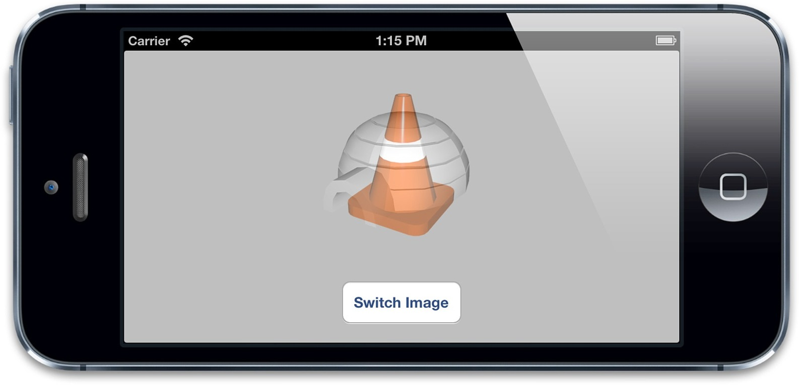

过渡
过渡
有时候对于iOS应用程序来说，希望能通过属性动画来对比较难做动画的布局进行一些改变。比如交换一段文本和图片，或者用一段网格视图来替换，等等。属性动画只对图层的可动画属性起作用，所以如果要改变一个不能动画的属性（比如图片），或者从层级关系中添加或者移除图层，属性动画将不起作用。
于是就有了过渡的概念。过渡并不像属性动画那样平滑地在两个值之间做动画，而是影响到整个图层的变化。过渡动画首先展示之前的图层外观，然后通过一个交换过渡到新的外观。
为了创建一个过渡动画，我们将使用CATransition，同样是另一个CAAnimation的子类，和别的子类不同，CATransition有一个type和subtype来标识变换效果。type属性是一个NSString类型，可以被设置成如下类型：
kCATransitionFade
kCATransitionMoveIn
kCATransitionPush
kCATransitionReveal
到目前为止你只能使用上述四种类型，但你可以通过一些别的方法来自定义过渡效果，后续会详细介绍。
默认的过渡类型是kCATransitionFade，当你在改变图层属性之后，就创建了一个平滑的淡入淡出效果。
我们在第七章的例子中就已经用到过kCATransitionPush，它创建了一个新的图层，从边缘的一侧滑动进来，把旧图层从另一侧推出去的效果。
kCATransitionMoveIn和kCATransitionReveal与kCATransitionPush类似，都实现了一个定向滑动的动画，但是有一些细微的不同，kCATransitionMoveIn从顶部滑动进入，但不像推送动画那样把老土层推走，然而kCATransitionReveal把原始的图层滑动出去来显示新的外观，而不是把新的图层滑动进入。
后面三种过渡类型都有一个默认的动画方向，它们都从左侧滑入，但是你可以通过subtype来控制它们的方向，提供了如下四种类型：
kCATransitionFromRight
kCATransitionFromLeft
kCATransitionFromTop
kCATransitionFromBottom
一个简单的用CATransition来对非动画属性做动画的例子如清单8.11所示，这里我们对UIImage的image属性做修改，但是隐式动画或者CAPropertyAnimation都不能对它做动画，因为Core Animation不知道如何在插图图片。通过对图层应用一个淡入淡出的过渡，我们可以忽略它的内容来做平滑动画（图8.4），我们来尝试修改过渡的type常量来观察其它效果。
清单8.11 使用CATransition来对UIImageView做动画
@interface ViewController ()
@property (nonatomic, weak) IBOutlet UIImageView *imageView;
@property (nonatomic, copy) NSArray *images;
@end
@implementation ViewController
- (void)viewDidLoad
{
[super viewDidLoad];
//set up images
self.images = @[[UIImage imageNamed:@"Anchor.png"],
[UIImage imageNamed:@"Cone.png"],
[UIImage imageNamed:@"Igloo.png"],
[UIImage imageNamed:@"Spaceship.png"]];
}
- (IBAction)switchImage
{
//set up crossfade transition
CATransition *transition = [CATransition animation];
transition.type = kCATransitionFade;
//apply transition to imageview backing layer
[self.imageView.layer addAnimation:transition forKey:nil];
//cycle to next image
UIImage *currentImage = self.imageView.image;
NSUInteger index = [self.images indexOfObject:currentImage];
index = (index + 1) % [self.images count];
self.imageView.image = self.images[index];
}
@end
你可以从代码中看出，过渡动画和之前的属性动画或者动画组添加到图层上的方式一致，都是通过-addAnimation:forKey:方法。但是和属性动画不同的是，对指定的图层一次只能使用一次CATransition，因此，无论你对动画的键设置什么值，过渡动画都会对它的键设置成“transition”，也就是常量kCATransition。

图8.4 使用CATransition对图像平滑淡入淡出
隐式过渡
CATransision可以对图层任何变化平滑过渡的事实使得它成为那些不好做动画的属性图层行为的理想候选。苹果当然意识到了这点，并且当设置了CALayer的content属性的时候，CATransition的确是默认的行为。但是对于视图关联的图层，或者是其他隐式动画的行为，这个特性依然是被禁用的，但是对于你自己创建的图层，这意味着对图层contents图片做的改动都会自动附上淡入淡出的动画。
我们在第七章使用CATransition作为一个图层行为来改变图层的背景色，当然backgroundColor属性可以通过正常的CAPropertyAnimation来实现，但这不是说不可以用CATransition来实行。
对图层树的动画
CATransition并不作用于指定的图层属性，这就是说你可以在即使不能准确得知改变了什么的情况下对图层做动画，例如，在不知道UITableView哪一行被添加或者删除的情况下，直接就可以平滑地刷新它，或者在不知道UIViewController内部的视图层级的情况下对两个不同的实例做过渡动画。
这些例子和我们之前所讨论的情况完全不同，因为它们不仅涉及到图层的属性，而且是整个图层树的改变--我们在这种动画的过程中手动在层级关系中添加或者移除图层。
这里用到了一个小诡计，要确保CATransition添加到的图层在过渡动画发生时不会在树状结构中被移除，否则CATransition将会和图层一起被移除。一般来说，你只需要将动画添加到被影响图层的superlayer。
在清单8.2中，我们展示了如何在UITabBarController切换标签的时候添加淡入淡出的动画。这里我们建立了默认的标签应用程序模板，然后用UITabBarControllerDelegate的-tabBarController:didSelectViewController:方法来应用过渡动画。我们把动画添加到UITabBarController的视图图层上，于是在标签被替换的时候动画不会被移除。
清单8.12 对UITabBarController做动画
#import "AppDelegate.h"
#import "FirstViewController.h"
#import "SecondViewController.h"
#import
@implementation AppDelegate
- (BOOL)application:(UIApplication *)application didFinishLaunchingWithOptions:(NSDictionary *)launchOptions
{
self.window = [[UIWindow alloc] initWithFrame: [[UIScreen mainScreen] bounds]];
UIViewController *viewController1 = [[FirstViewController alloc] init];
UIViewController *viewController2 = [[SecondViewController alloc] init];
self.tabBarController = [[UITabBarController alloc] init];
self.tabBarController.viewControllers = @[viewController1, viewController2];
self.tabBarController.delegate = self;
self.window.rootViewController = self.tabBarController;
[self.window makeKeyAndVisible];
return YES;
}
- (void)tabBarController:(UITabBarController *)tabBarController didSelectViewController:(UIViewController *)viewController
{
//set up crossfade transition
CATransition *transition = [CATransition animation];
transition.type = kCATransitionFade;
//apply transition to tab bar controller's view
[self.tabBarController.view.layer addAnimation:transition forKey:nil];
}
@end
自定义动画
我们证实了过渡是一种对那些不太好做平滑动画属性的强大工具，但是CATransition的提供的动画类型太少了。
更奇怪的是苹果通过UIView +transitionFromView:toView:duration:options:completion:和+transitionWithView:duration:options:animations:方法提供了Core Animation的过渡特性。但是这里的可用的过渡选项和CATransition的type属性提供的常量完全不同。UIView过渡方法中options参数可以由如下常量指定：
UIViewAnimationOptionTransitionFlipFromLeft
UIViewAnimationOptionTransitionFlipFromRight UIViewAnimationOptionTransitionCurlUp UIViewAnimationOptionTransitionCurlDown UIViewAnimationOptionTransitionCrossDissolve UIViewAnimationOptionTransitionFlipFromTop UIViewAnimationOptionTransitionFlipFromBottom
除了UIViewAnimationOptionTransitionCrossDissolve之外，剩下的值和CATransition类型完全没关系。你可以用之前例子修改过的版本来测试一下（见清单8.13）。
清单8.13 使用UIKit提供的方法来做过渡动画
@interface ViewController ()
@property (nonatomic, weak) IBOutlet UIImageView *imageView;
@property (nonatomic, copy) NSArray *images;
@end
@implementation ViewController
- (void)viewDidLoad
{
[super viewDidLoad]; //set up images
self.images = @[[UIImage imageNamed:@"Anchor.png"],
[UIImage imageNamed:@"Cone.png"],
[UIImage imageNamed:@"Igloo.png"],
[UIImage imageNamed:@"Spaceship.png"]];
- (IBAction)switchImage
{
[UIView transitionWithView:self.imageView duration:1.0
options:UIViewAnimationOptionTransitionFlipFromLeft
animations:^{
//cycle to next image
UIImage *currentImage = self.imageView.image;
NSUInteger index = [self.images indexOfObject:currentImage];
index = (index + 1) % [self.images count];
self.imageView.image = self.images[index];
}
completion:NULL];
}
@end
文档暗示过在iOS5（带来了Core Image框架）之后，可以通过CATransition的filter属性，用CIFilter来创建其它的过渡效果。然是直到iOS6都做不到这点。试图对CATransition使用Core Image的滤镜完全没效果（但是在Mac OS中是可行的，也许文档是想表达这个意思）。
因此，根据要实现的效果，你只用关心是用CATransition还是用UIView的过渡方法就可以了。希望下个版本的iOS系统可以通过CATransition很好的支持Core Image的过渡滤镜效果（或许甚至会有新的方法）。
但这并不意味着在iOS上就不能实现自定义的过渡效果了。这只是意味着你需要做一些额外的工作。就像之前提到的那样，过渡动画做基础的原则就是对原始的图层外观截图，然后添加一段动画，平滑过渡到图层改变之后那个截图的效果。如果我们知道如何对图层截图，我们就可以使用属性动画来代替CATransition或者是UIKit的过渡方法来实现动画。
事实证明，对图层做截图还是很简单的。CALayer有一个-renderInContext:方法，可以通过把它绘制到Core Graphics的上下文中捕获当前内容的图片，然后在另外的视图中显示出来。如果我们把这个截屏视图置于原始视图之上，就可以遮住真实视图的所有变化，于是重新创建了一个简单的过渡效果。
清单8.14演示了一个基本的实现。我们对当前视图状态截图，然后在我们改变原始视图的背景色的时候对截图快速转动并且淡出，图8.5展示了我们自定义的过渡效果。
为了让事情更简单，我们用UIView -animateWithDuration:completion:方法来实现。虽然用CABasicAnimation可以达到同样的效果，但是那样的话我们就需要对图层的变换和不透明属性创建单独的动画，然后当动画结束的是哦户在CAAnimationDelegate中把coverView从屏幕中移除。
清单8.14 用renderInContext:创建自定义过渡效果
@implementation ViewController
- (IBAction)performTransition
{
//preserve the current view snapshot
UIGraphicsBeginImageContextWithOptions(self.view.bounds.size, YES, 0.0);
[self.view.layer renderInContext:UIGraphicsGetCurrentContext()];
UIImage *coverImage = UIGraphicsGetImageFromCurrentImageContext();
//insert snapshot view in front of this one
UIView *coverView = [[UIImageView alloc] initWithImage:coverImage];
coverView.frame = self.view.bounds;
[self.view addSubview:coverView];
//update the view (we'll simply randomize the layer background color)
CGFloat red = arc4random() / (CGFloat)INT_MAX;
CGFloat green = arc4random() / (CGFloat)INT_MAX;
CGFloat blue = arc4random() / (CGFloat)INT_MAX;
self.view.backgroundColor = [UIColor colorWithRed:red green:green blue:blue alpha:1.0];
//perform animation (anything you like)
[UIView animateWithDuration:1.0 animations:^{
//scale, rotate and fade the view
CGAffineTransform transform = CGAffineTransformMakeScale(0.01, 0.01);
transform = CGAffineTransformRotate(transform, M_PI_2);
coverView.transform = transform;
coverView.alpha = 0.0;
} completion:^(BOOL finished) {
//remove the cover view now we're finished with it
[coverView removeFromSuperview];
}];
}
@end

图8.5 使用renderInContext:创建自定义过渡效果
这里有个警告：-renderInContext:捕获了图层的图片和子图层，但是不能对子图层正确地处理变换效果，而且对视频和OpenGL内容也不起作用。但是用CATransition，或者用私有的截屏方式就没有这个限制了。